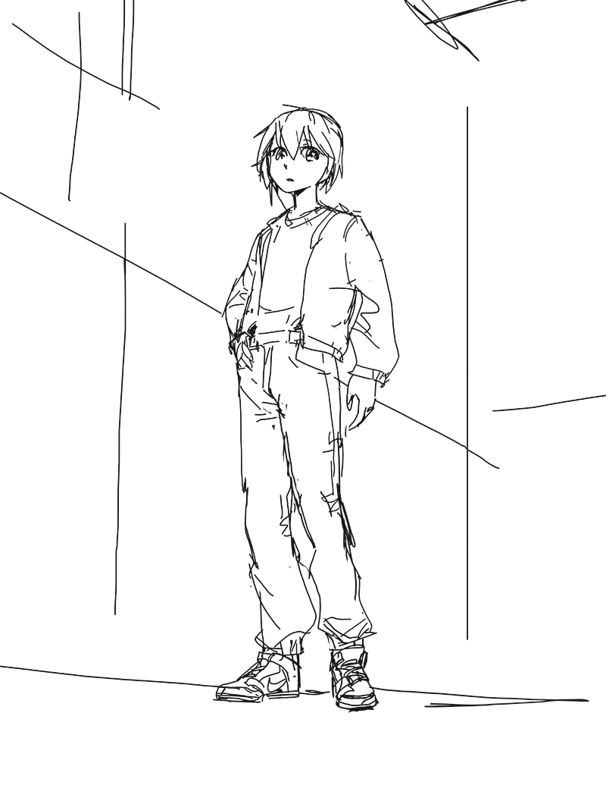
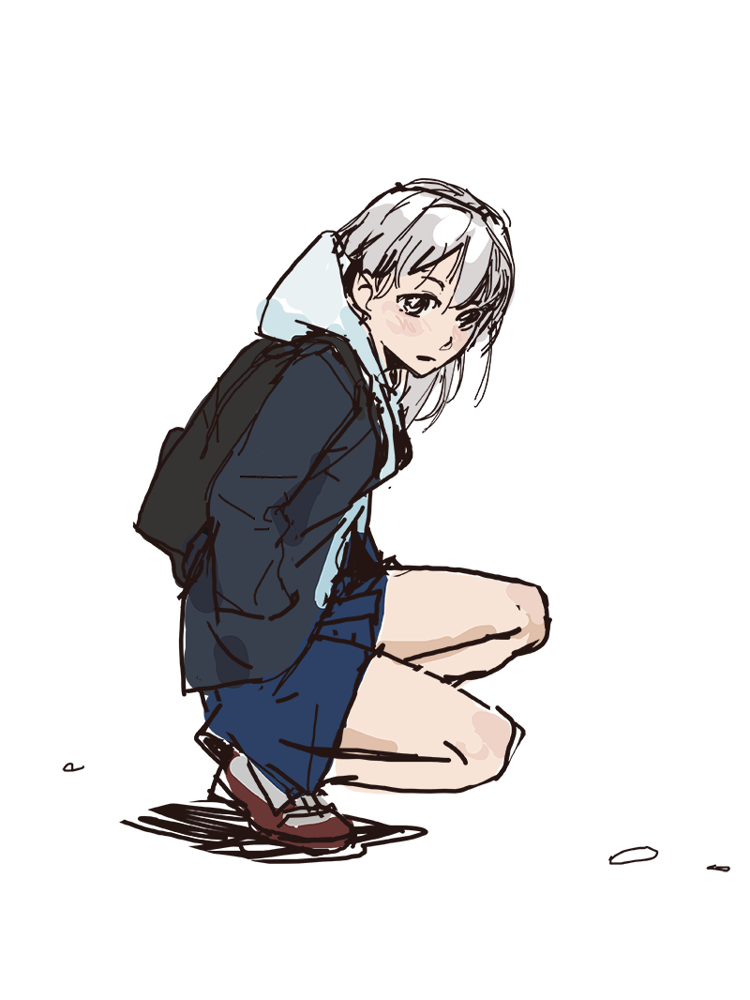

Art's been quite the journey. The last year I've spent the least amount of time since I started on drawing and painting. My perspective on art is becoming more of a 'means to an end' rather than a pursuit in of itself, which is the typical way it's apprehended. That's come with a general loss of interest in the practice, however.

sept. 2023 Something quick, just trying to draw whatever I feel like. I'm still not convinced about this whole art thing. When left entirely to my own device I find myself almost at a loss in terms of subject matter. I guess artwork doesn't have to vary much subject-wise. Why not draw the same thing every time if that's what you like?

aug. 2023 This was for the artstation challenge around that time. Sadly it did not quite end up finished. Also we were supposed to submit like 4 paintings total or something. I do not like to paint buildings, traditional painting is just not suited to hard graphic edges like that. It was an interesting work in the sense that I tried to do something a bit different though, this is probably the most color I've ever used at one time.

sept. 2023 Clive Bell mockingly suggested that the sole purpose of art to most was to depict women. I think that might have been right though.

feb. 2023 Probably the best thing I've made in terms of technique

feb. 2022

may 2023 This was my part done for a community project to redraw the first chapter of Blame!. It was interesting trying a different style.

aug. 2022 a rare fanart

oct. 2021

sept. 2022

oct. 2022

june 2022

nov. 2022